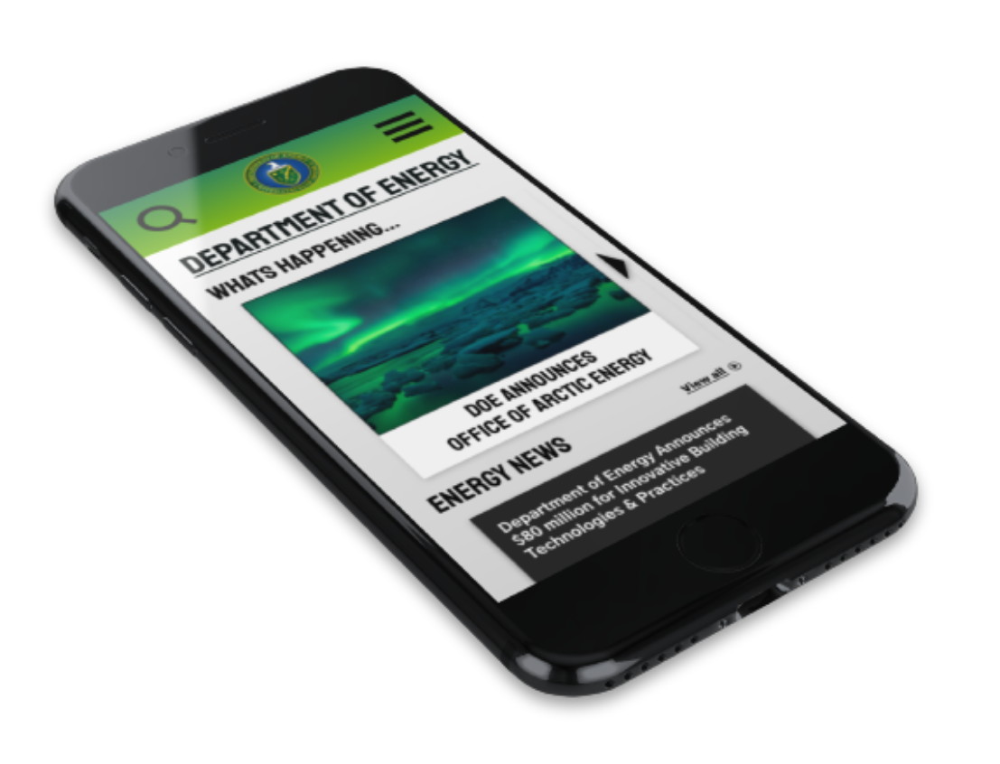
DEPARTMENT OF ENERGY REDESIGN
RWD of the energy.gov website to make it more accessible, responsive and engaging for users.
TIMELINE:
September - October 2020
MY ROLE:
UXR
UX
UI
TEAM
Emma Jaud, Jade Lyon, Vivian Baier, Cameron Cooper
MY MAIN TASKS
Heuristic Evaluations
Information Architecture
Wireframing
Prototyping
DESIGN & RESEARCH TOOLS
Adobe Color, Adobe XD, Invision, Figma, Miro, Slack, Zoom
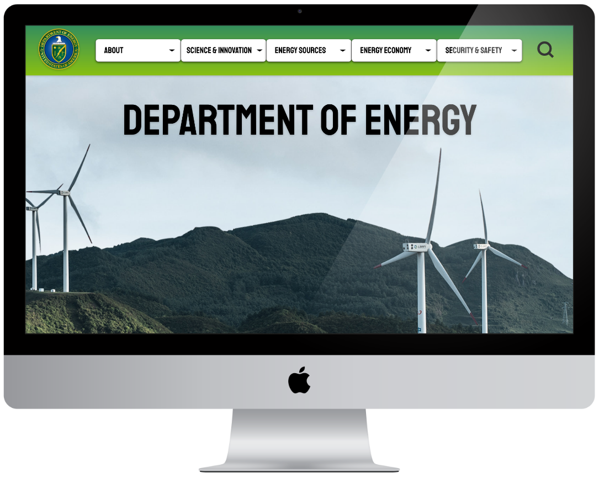
THE PROBLEM
My team and I wanted to figure out why the Department of Energy website is not approachable to the common user looking to find information on energy resources in the U.S.
OUR SOLUTION
Our team worked together to analyze and eventually rebuild the energy.gov website to make it more accessible and useful for new users. Our goal was to educate users about the uses of energy, but not overwhelm them with information.
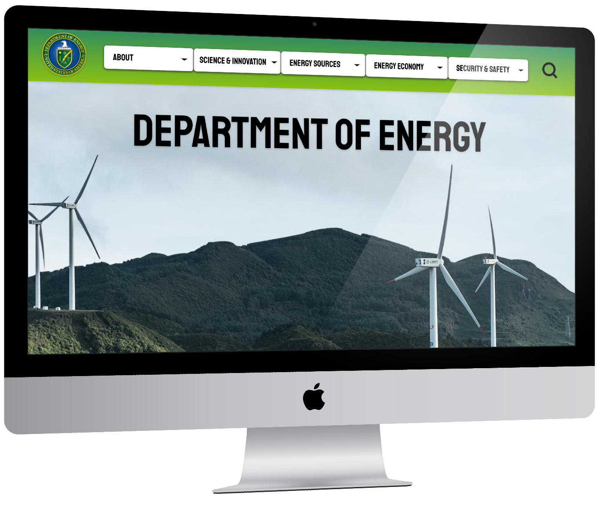
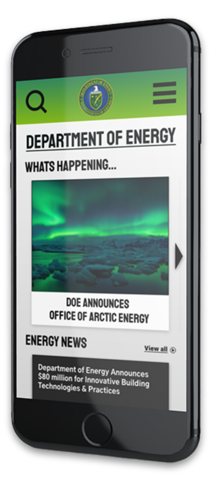
Click on devices to view prototypes
User Interface Anaylsis
Proto Persona
We created a proto persona to gain a better understanding of who might access the energy.gov website and how they may navigate it.
WHY “JERRY” VISITS THE SITE:
He is looking for clean up sites in his surrounding area to raise money for. He is also looking for better and trustworthy information to provide to his students in lecture. His main goal is to use energy.gov as a trusted resource for his course for years to come.
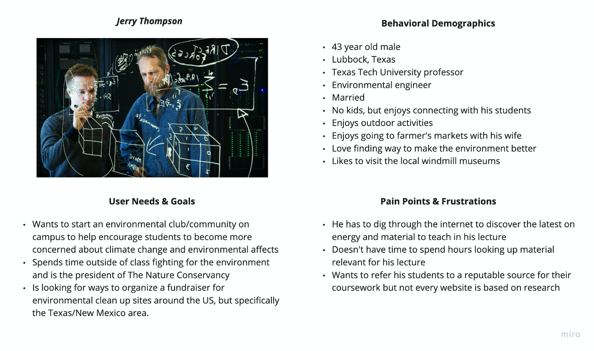
After developing this proto persona, we evaluated what it would look like if this person tried to visit the website. To analyze that, we gave the persona a hypothetical reason.
User Path
To dive in deeper to our persona we came up with a scenario for why he may be visiting energy.gov.
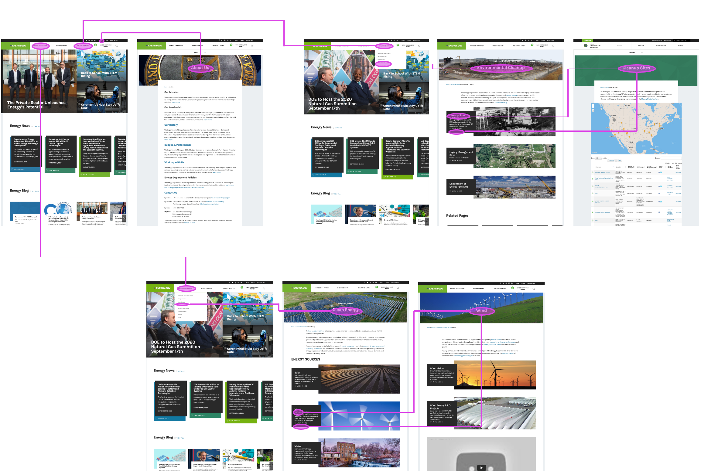
Heuristic Evaluation
We then further analyzed the website to determine what worked and what did not so we could improve aesthetics and accessibility. For this we conducted a heuristic and accessibility evaluation.
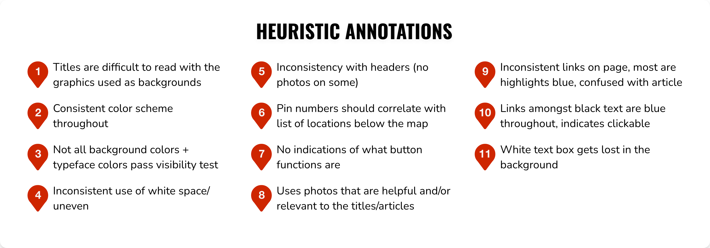
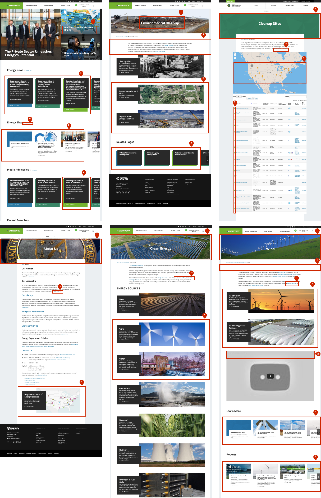
Accessability Evaluation
Main Accessibility Finding:
- Titles were difficult to read with the graphics used as backgrounds.
- Titles to articles blend into article descriptions on the homepage.
- Original color palette does not pass the accessibility test.
- Too much white space causes the user to get lost.
Guerrilla Usability Testing
Objective:
As UI designers, we need to make sure that users are able to navigate through the website to find information successfully, so we designed three tasks to test.
Tasks:
- Have a user locate the website’s mission statement.
- Find the map of cleanup sites provided under “Environmental Cleanup” page.
- Find the detailed information about “wind” energy in the “Clean Energy” section.
With these tasks we conducted 5 layout & design usability tests.
After discussing and analyzing the results from our usability tests, we organized and streamlined our users’ thoughts into a Usability Testing Priority Matrix.
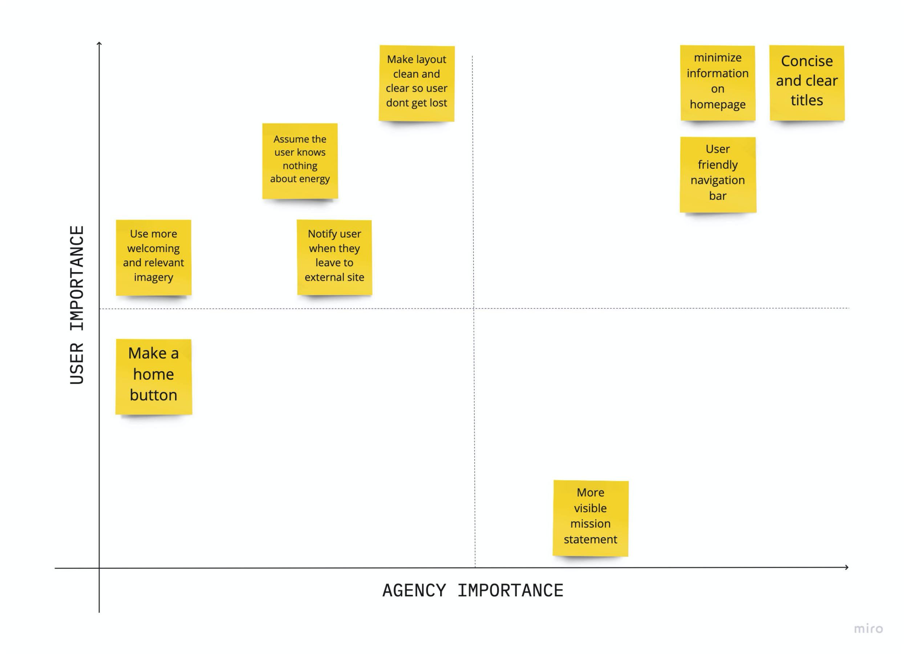
Main Takeaways:
- Lessen the amount of text and information on the homepage.
- Make titles and navigation buttons clear and concise.
- Create a user friendly navigation bar with new users in mind.
Mood Board
Once we complete our usability testing for layout and design we put together a guide/mood board to showcase our vision for the revamped energy.gov website.
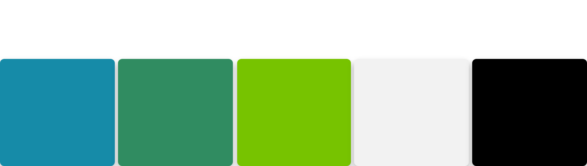
From our accessibility test we found that the energy.gov color palette failed when it comes to accessibility. So we just tweak the existing color so that they pass.
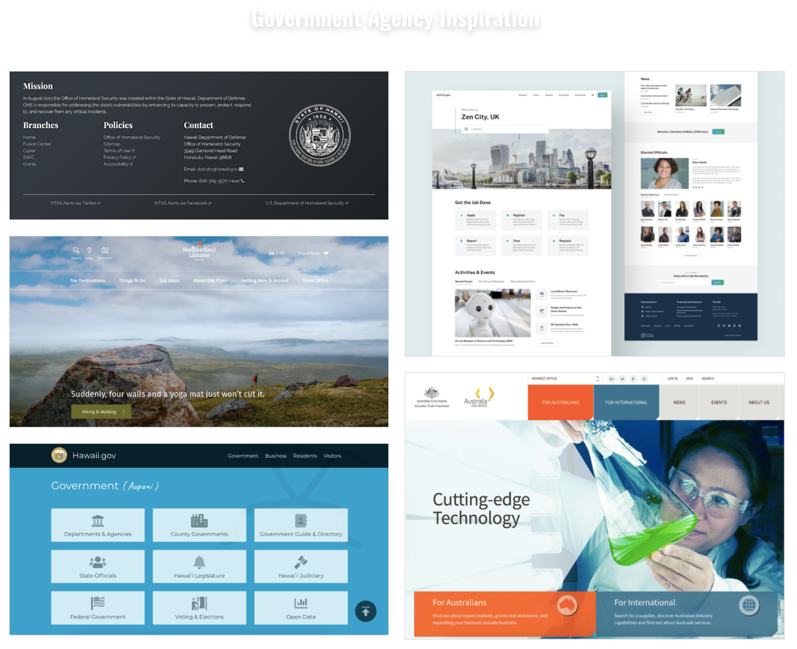
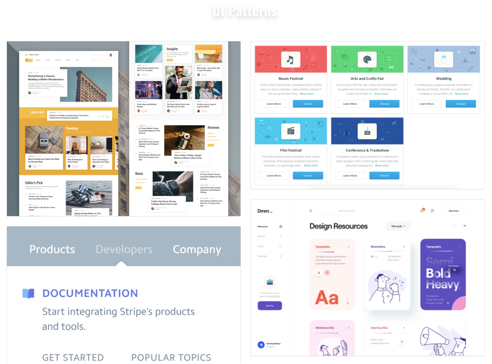
Navigation Evaluation
After testing and creating our mood board for the direction we wanted to take the energy.gov redesign we moved into analyzing the navigation as well as testing it with users to determine how we can rework the navigation to make it more efficient and smooth for users.
We conducted four more tests to determine the usability of the Energy.Gov website on both desktop and mobile.
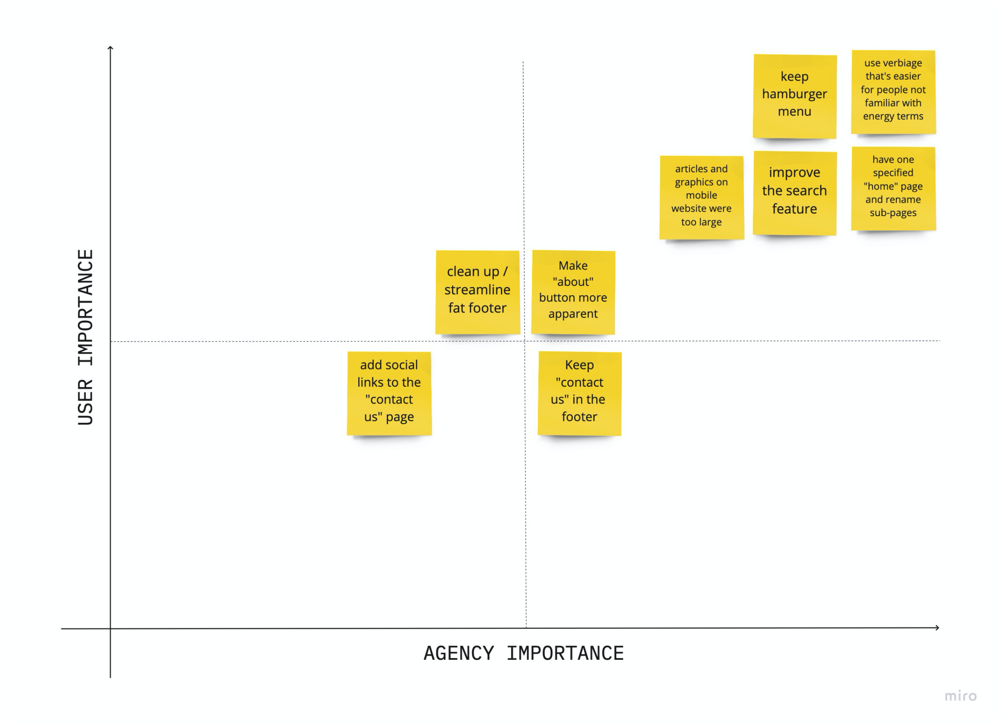
Main Takeaways:
- Changing the verbiage and organization of the drop down menus would improve the navigation.
- Changing the size and relevance of graphics would improve aesthetics.
Information Architecture
Card Sorting
Once we determined what needed to be reworked in the navigation from testing and research we went forward with a card sort of the navigation.
We broke down all the content and links on the individual webpages to resort them in a fashion that was easier for a user to navigate.
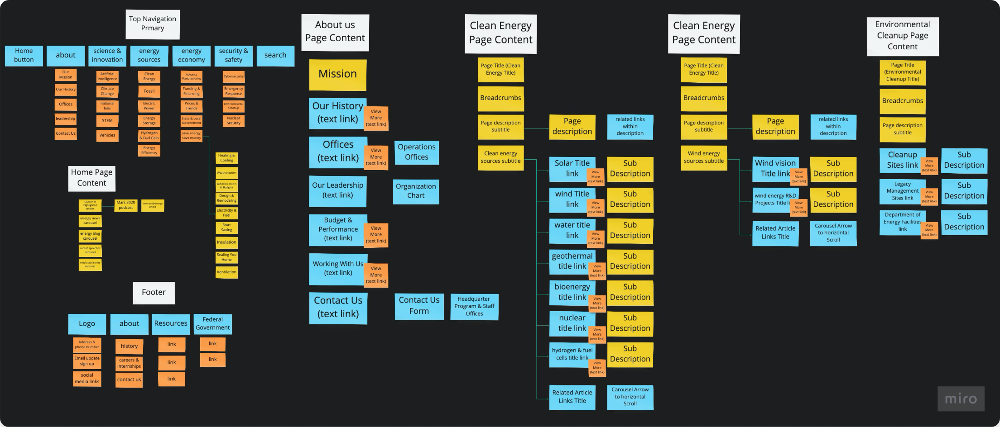
My team reorganized the pages in a logical and straightforward pathway, shown above. Our goals were to clear immediate user confusion and make the navigation more relevant for the website.
Considering how disorganized the original website is, we wanted to make sure and keep alike information together.
Wireframes
Lofi Desktop Wireframes
Once the card sorting was complete, I created the reimagined Energy.gov desktop homepage and navigation in lo-fi wireframes.
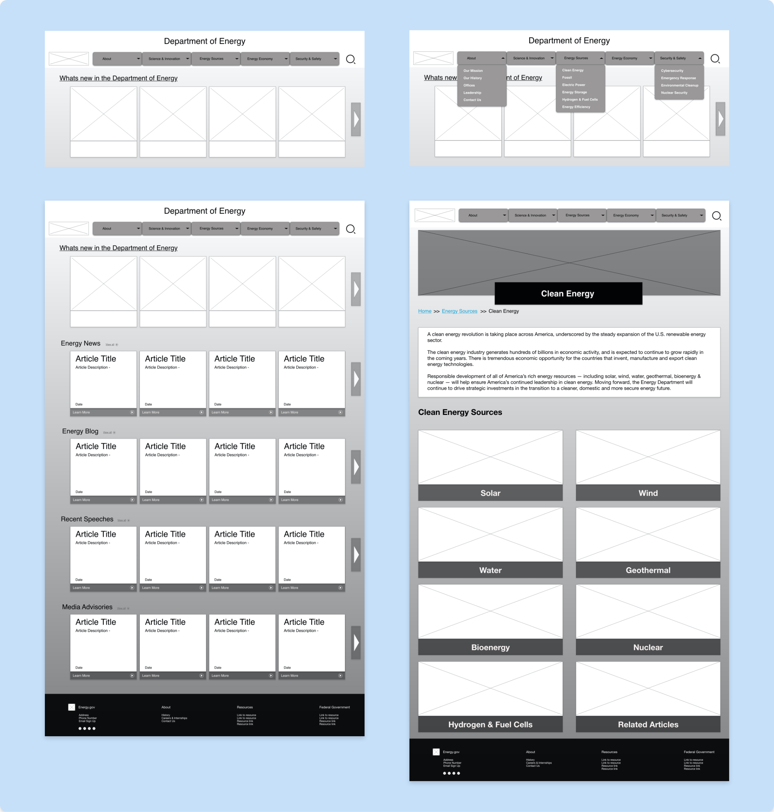
We wanted to give the website a clean and simple layout for each page so the “About Us”, “Environmental Cleanup” and “Wind Energy” page have a similar layout to the “Clean Energy page” that is shown above.
There was some rearranging of the header navigation, but the more impactful change was the reformatting by resizing graphics and ridding of jargon for a cleaner and more focused look.
Lofi Mobile Wireframes
Since we are making a responsive website I created mobile wireframes as well to go along side the desktop wireframes.
We kept the carousels feature but reduced the size of the graphics for the articles so that more links and content are visible upon website arrival. The new header and footer navigations are also displayed here as drop-down menus.
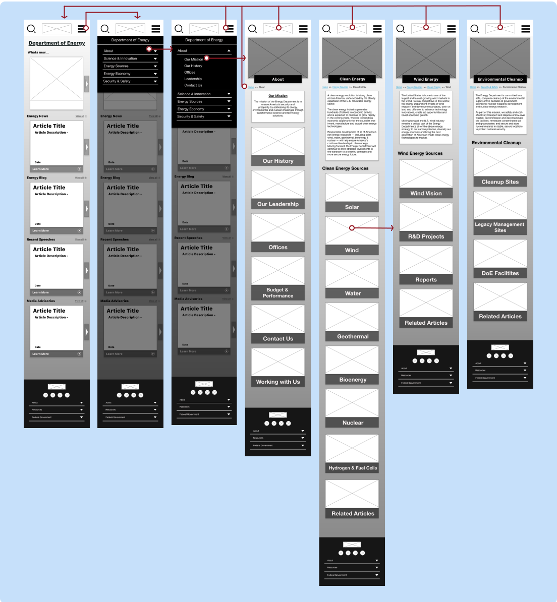
Lofi Usability Testing
We conducted three 5-second tests to determine the first impression of the Energy.Gov homepage and navigation.
From those tests we put the feedback from users into a priority matrix to determine what need to be tackled first in our iterations.
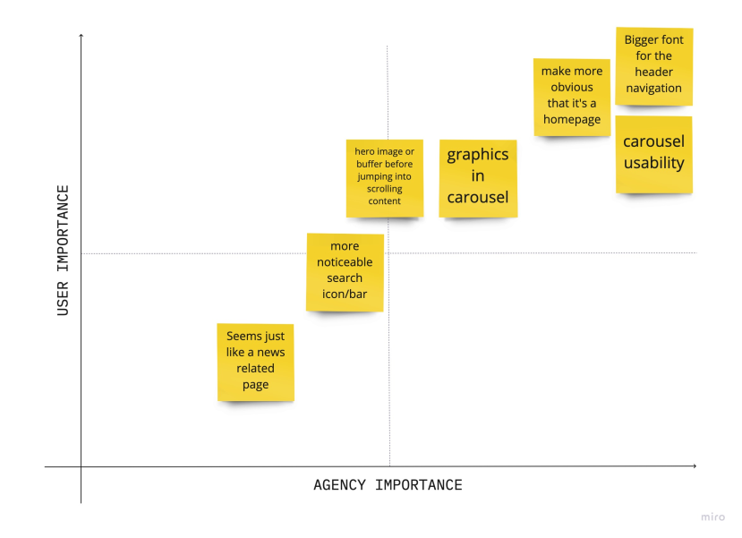
Main Takeaways:
- Find a way to make it more obvious that it’s a homepage with either a hero image or a small description.
- User a larger font for the navigation bar to have the eyes drawn to it more naturally.
- The carousels were well received.
Responsive & Interactive Design
Style Guide
UI STYLE DIRECTION:
Started with a more modern look to the website so that people feel like it is relevant with current information and topics. We wanted to stick to colors that are representative of different energy resources. Elements like water and air are thought of as the color blue, and recycling is connected to blue as well. Green being an earth tone is associated with plants, foliage, organic elements, and natural resources.
We finalized details for typography, button states, icons, and more. These guidelines were applied to the desktop and mobile prototypes.
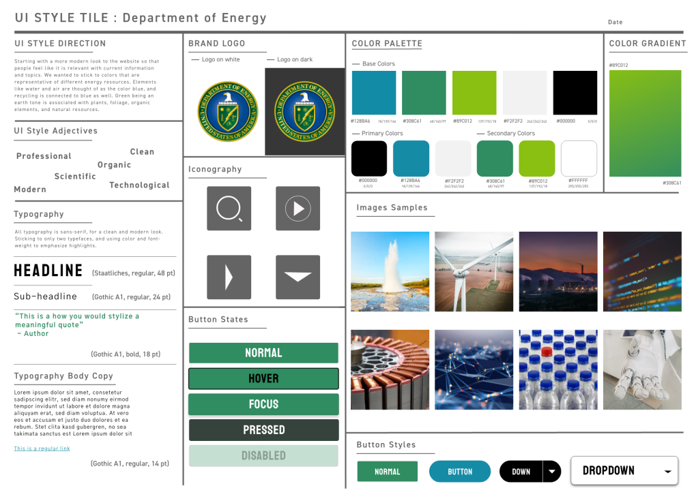
HiFi Desktop Wireframes
After collaborating and ironing out details for the visual design, we applied that plus the feedback from our user tests to our desktop website prototype.
To make they webpage more dynamic we added at hero image animation.


HiFi Mobile Wireframes
Along with the solidified design standards being applied, the responsive homepage wireframes were created for the mobile prototype.

Final User Test Key Highlights
Eight tests were conducted to ensure the usability of the mobile navigation and the desktop iterations.
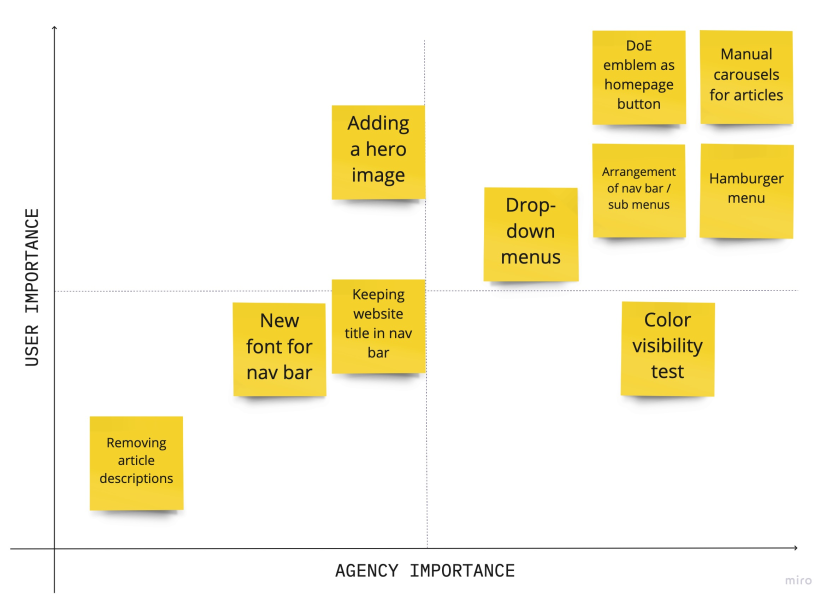
Main Takeaways:
- Hamburger menu and drop-down menus made navigation easy.
- Hero image was preferred.
- Color scheme was well-liked.
Key Learnings
In our iterated prototypes, we accentuated the navigation to make it more approachable. We abided our design based on a person who has basic knowledge in science and energy, but is not a digital native.
Final Prototypes
Click on devices to see prototypes!
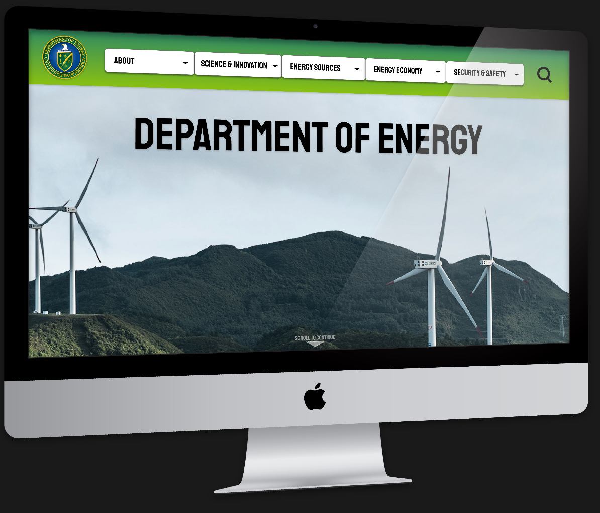
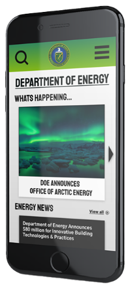